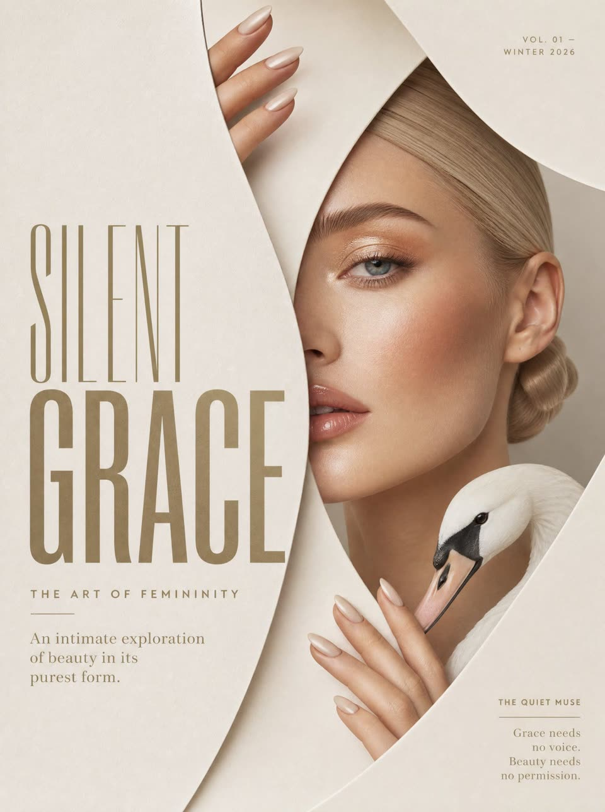

Beauty magazine cover template: a sculptural paper crescent reveals only eye, brow and lips (GPT Image 2.6)
AES-097Aesthetic / GenreGPT Image 2.6by @sipteaandcoffee2026-11-21

A fill-in-the-blanks cover template ([MAIN SUBJECT], [SECONDARY SUBJECT], [CONCEPT], [COLOR]): overlapping matte paper surfaces with a crescent-shaped opening expose part of a beauty portrait, paired with a secondary subject (swan, fox, panther, flower) and editorial cover type. The four outputs show one layout running a whole series.
Prompt
Create a luxury contemporary beauty magazine cover featuring [MAIN SUBJECT] alongside [SECONDARY SUBJECT], visually exploring [CONCEPT] through architectural elegance, sculptural minimalism, and avant-garde editorial art direction. Design an asymmetrical composition using oversized, overlapping matte [COLOR] paper surfaces with a sculptural crescent-shaped opening, revealing an intimate, photorealistic beauty portrait beneath. Selectively expose the subject's expressive eye, sculpted eyebrow, cheekbone, nose, and lips while concealing the remaining facial features behind the architectural layers. Include elegantly positioned hands interacting naturally with the paper edges, sophisticated [NAIL DESIGN], luxurious [MAKEUP], and carefully styled [HAIRSTYLE]. Introduce the secondary subject within the lower portion of the opening, establishing a meaningful visual connection with the main subject. Preserve authentic anatomy, realistic textures, and natural proportions. Use soft directional studio lighting, realistic skin texture, luminous cosmetic highlights, atmospheric shadows, subtle physical depth, and premium editorial photography. Maintain a harmonious, restricted color palette of [COLOR PALETTE], with matte paper finishes, complementary cosmetic tones, and refined photographic contrast. TYPOGRAPHY & LAYOUT Left section: Oversized experimental headline "[HEADLINE]", combining thin condensed and extra-bold uppercase typography. Beneath the headline: Small category text "[CATEGORY]" and a sophisticated editorial description "[DESCRIPTION]". Upper right corner: Minimal publication information "[ISSUE]". Lower right section: Elegant editorial title "[TITLE]" and a poetic multiline statement "[TAGLINE]". Contemporary Swiss graphic design, sculptural paper layering, architectural negative space, precise typographic hierarchy, asymmetrical visual balance, subtle embossed print textures, and sophisticated collectible fashion-magazine aesthetics. No distorted anatomy, unnecessary decorations, random typography, artificial skin smoothing, or excessive visual effects. Vertical 3:4 composition, ultra-photorealistic, ultra-high-resolution, premium print-ready editorial quality.
Our Seedance 2.5 adaptation
[ADAPTED for Seedance 2.5 by Grok Bot; not the creator's prompt. Follows the official BytePlus Seedance 2.5 prompt guide and its official sd25-pe prompt-optimizer skill: parameters only on the API line (not in the prompt body), subject + action + scene, then visuals, camera (move, subject, start, direction, arrival) and sound; only the source's own exclusions are kept.] API: duration 5, ratio 3:4 (taken from the first frame), resolution 1080p (4k for a final), generate_audio true; first_frame = the AES-097 still. 【Subject】The beauty portrait and the secondary subject exactly as in the first frame, half hidden behind the layered matte paper crescent. 【Action】The front paper layer slides slowly sideways, widening the crescent opening to reveal the second eye; she blinks once and lifts her gaze to the lens; the secondary subject turns its head slightly. 【Scene】The same magazine-cover layout, colours and cover typography, unchanged. 【Camera】Locked-off frame; no camera move, no cut. 【Visuals】Matte paper texture with soft natural shadows at the cut edges, realistic skin, editorial print finish; keep the masthead and cover lines sharp and unchanged. 【Sound】A dry paper slide, soft studio ambience.
Tags: GPT Image 2.6, template, magazine cover, paper cut-out, partial reveal, series layout, beauty editorial